山田教会/長崎県生月町
長崎県生月島。
長崎本土から平戸大橋を渡って平戸島、そこからさらに生月大橋を渡って生月島に着く。日本本土から陸つながりの場所としてはほぼ最西端の町である。
山間部に入ると韓国のラジオしか入らないという最果て感満点のこの島はカクレキリシタンの島として有名な島である。
カクレキリシタン。
それは簡単にいってしまうと、明治のキリスト教禁令解放後もキリスト教に改宗せず、潜伏期当時から続けられている独特の信仰形態の事である。このカクレキリシタン信仰、かつては長崎県内数カ所に存在したのだが、現在ではこの生月島にしか存在しない貴重な信仰形態のだ。もちろん現在では隠れて信仰している訳ではないのだが適当な呼称がないのでそう呼んでいるいるだけである。生月島のカクレキリシタン信仰については生月町立島の館という博物館に貴重な資料が展示されている。また、興味のある方は「カクレキリシタンの信仰世界」をはじめとした現代カクレキリシタン研究の第一人者、宮崎賢太郎氏の著作をお勧めします。あと「かくれキリシタンの聖画」も凄かったです。カクレキリシタンについては今回直接関係ないのでまた別の機会に、ということで。
で、その生月島に山田教会という教会がある。
おっと。
そういえば当サイト初の国内キリスト教会。「珍寺」と銘打ちながらその節操の無さは何じゃい！とのお叱りの声もあるやも知れぬが、面白ければ仏教だろうがキリスト教だろうが構わないのである。ただ、今までこんなに強烈な教会に出会った事がなかった、というだけの話ですわ。というわけでこれからもキリスト教だろうとシーク教だろうと民間信仰だろうと節操なく行かせてもらいますんでその辺よろしく。
あ、山田教会のハナシですね。
生月のカクレキリシタンと一般のキリスト教との関係は複雑なのでここでの説明は省くが、この教会は基本的にはカクレキリシタンとは別のいわゆるローマンカトリックのキリスト教会であると認識いただきたい。つまり現在生月島には明治以降に再布教されたキリスト教と450年以上かけて醸造されたカクレキリシタン信仰という2つのキリスト教があるということだ。
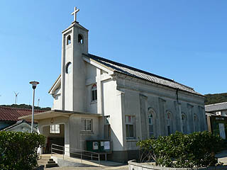
この教会は大正元年に造られたもので長崎をはじめ九州のキリスト教会を数多く手掛けてい鉄川与助氏の設計によるものである。
前庭にはトマス西神父の列聖を記念した列聖記念碑やマリア像のジオラマなどがある。
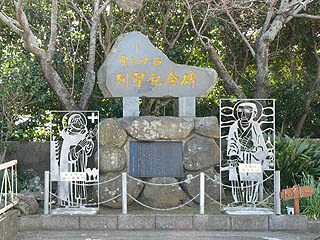 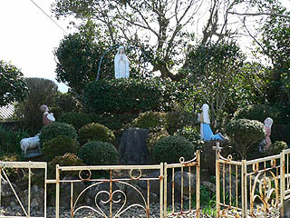
で、中に入る。
コウモリ天井にステンドグラス。いかにも長崎の教会らしい小さいながらも上品な造りの教会だ。
日本の教会建築で木造のコウモリ天井というのは珍しいと思う。鉄川の技術力が伺える。
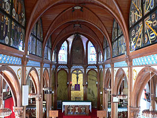 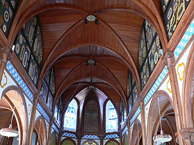
正面のキリスト像の右手には着物を着た人が拝む姿のレリーフがあり、この島の悲しい歴史を物語っている。
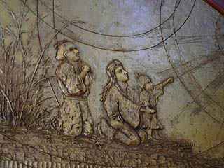
さて。
教会に入った瞬間、一番気になったのがコウモリ天井の両脇のアーチ状の部分の変な模様。
その奇妙な絵は教会の荘厳な雰囲気とは明らかに一線を画するデザインだ。
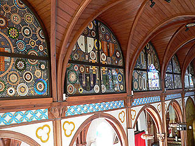
丸を基調とした様々な色を使った模様は色合いといい構図といいその部分だけが昭和チックな雰囲気を醸し出している。
また、どこか南米の教会を思い起こさせる絵柄だ。
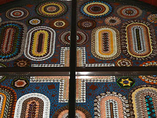 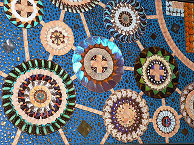
その抽象的な絵柄を良く見てみると・・・
むむむっ！
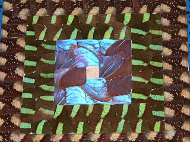
おおおおっ！全部蝶の羽で出来ているじゃあ〜りませんか！
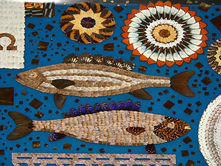
蝶の羽で出来た模様は基本的には円形の模様だが中には魚をモチーフにしたものも多い。
生月は漁業の島なのでもしかしたら大漁祈願だったりするのだろうか・・・
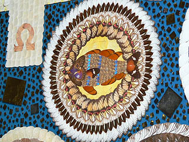 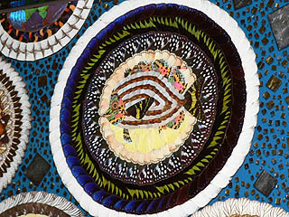
このように大量の蝶の羽を何時、どうやって集めたのか、また、何故蝶の羽で模様をつくろうとしたのか、一切不明だが、今ではこれほどまでの蝶を集める事すら難しい事であろう。ホラ、ワシントン条約とかあるし。
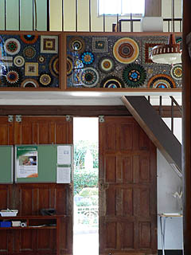
今、入ってきた入口の上にも蝶の羽がひしめいていた。
誰かが信仰の名の許に蝶の羽を一匹一匹むしって貼り付けた筈なのだ・・・その姿を想像するに改めて宗教が持つ信仰心のパワーに圧倒される。信仰とはある局面では日常生活上、考えられない程のチカラを発揮するものなのだろうか。
島内にあったキリスト教徒の墓地。
十字架から下は普通の仏式の墓地と変わらない形態ではある。それゆえにかえって十字架が際立っていた。
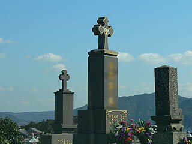
2005.2.
追記
このページをご覧になったＮＭさんからキリスト教と魚の大変興味深い話を伺いました。それによると「イエス・キリスト・神の子・救い主」という言葉のギリシャ語の頭文字を取ると、ギリシャ語で「魚」という言葉になり、このためキリスト教が迫害されていたローマ時代などに、魚の模様はキリストのシンボルとして使われていたそうです。教会の文様に魚が用いられているのは、このような理由からだとの事です。
・・・単なる大漁祈願じゃなかったのか・・・
2005.3.記
珍寺大道場 HOME